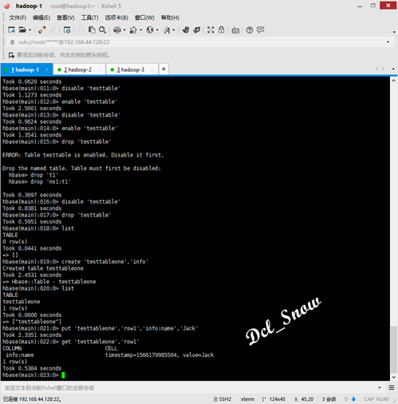

原文连接:https://www.cnblogs.com/Dcl-Snow/p/11433031.html
Hbase的数据结构
基本要素：命名空间、表、行、列、单元格，region，时间戳。
1.命名空间：NameSpaces的作用
Table：表，所有的表都是命名空间的成员，即表必属于某个命名空间，如果没有指定，则在default默认的命名空间中。
RegionServer group：一个命名空间包含了默认的RegionServer Group。
Permission：权限，命名空间能够定义访问控制列表ACL（Access Control List）。例如，创建表，读取表，删除，更新等等操作。
Quota：限额，可以强制一个命名空间可包含的region的数量。
2.表：概念上可以理解为关系型数据库的表。
3.行：行键rowkey是行的唯一标识元素，表中的数据存储根据行键进行排序，数据的访问也是通过行键进行。
4.列：（列族:列名）表中的每个列，都归属于某个列族，列族是表的schema的一部分(列不是)，必须在使用表之前定义，列名都以列族作为前缀；例如info:name，info:age，info:class都属于info这个列族。
5.单元格： 单元格cell中存放的是不可分割的字节数组，每个单元格拥有版本信息，插入数据时若没有设置版本，则为默认版本。
6.region：region将表水平划分，是Hbase集群分布数据的最小单位,在线的所有区域就构成了表的内容。
7.时间戳：Hbase 中每个 cell都保存着同一份数据的多个版本，版本通过时间戳来索引，插入数据时可以设置时间戳的值，若未设置则生成默认时间戳。
Hbase的Shell操作
在任意节点主机上使用hbase shell即可连接到已经启动的Hbase实例：
1 # hbase shell
输入help可以显示帮助文档内容，status可以查看Hbase集群状态：
1 > help
status提供HBase的状态：
1 > status
version提供正在使用Hbase版本:
1 > version
create用于创建表，创建时必须指定表名和ColumnFamily名称：
1 > create 'testtable','infofamily'
list用于查看HBase中所有的表：
1 > list
describe命令可以查看某个表的信息：
1 > describe 'testtable'
alter用于修改一个表，例如添加列族：
1 > alter 'testtable',NAME=>'basic'
{kind=link}
{kind=link}
{kind=link}
{kind=link}
{kind=link}
{kind=link}
{kind=link}
{kind=link}
{kind=link}
使用describe命令查看添加列族后的表信息：
使用alter命令删除列族：
1 > alter 'testtable',NAME=>'basic','METHOD'=>'delete'
{kind=link}
{kind=link}
使用disable命令可以禁用表，在做删除表或其他的操作时，需要在表禁用的情况下才能进行操作，使用enable命令可以将禁用的表格重新启用：
1 > disable 'testtable'
1 > enable 'testtable'
使用drop命令可以删除已经禁用的表（必须先disable表，否则会报出错误提示）：
1 > disable 'testtable'
2 > drop 'testtable'
再创建一个表testtableone：
1 > create 'testtableone','info'
使用put命令可以向表中添加数据，put命令格式：
1 > put '表名','行键','列族:列名','VALUE'
1 > put 'testtableone','row1','info:name','Jack'
使用get命令可以看某行数据信息：
1 > get 'testtableone','row1'

使用scan可以查看表中所有行的数据信息：
1 > scan 'testtableone'

delete用于删除表中的单元格值，delete命令格式：
1 > delete '表名','行键','列族:列名',时间戳
先往表中多插入几条数据。
注意：此处在插入数据时，先插入的row2行数据Bob，由于在后续插入数据时，行键row2没有更改，所以Bob数据直接被Lucy替换了。
删除Jack的class单元格数据：
1 > delete 'testtableone','row1','info:class',1566182654321
deleteall用于删除给定行的所有单元格：
1 > delete '表名','行键'
删除row1行的所有单元格数据：
1 > deleteall 'testtableone','row1'
count用于计数并返回表中的行的数值：
1 > count 'testtableone'
至此常用的命令列举完成。
{kind=link}
{kind=link}
{kind=link}
{kind=link}
{kind=link}
{kind=link}
{kind=link}
{kind=link}
{kind=link}
{kind=link}
{kind=link}